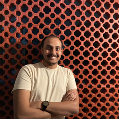

01 · About

From hexacopters to fulfilment-scale robots
I started in electronics and communication engineering in Bangalore, where I helped build The Eclipse, an autonomous hexacopter we flew at AUVSI SUAS 2019. Since then I’ve trained on-device vision models at Samsung R&D, shipped software at PwC and earned a master’s in Robotics at Northeastern. Today I deploy robotic systems at fulfilment-network scale at Amazon Robotics.
- Amazon Robotics
- Northeastern · M.S. Robotics
- PwC
- Samsung R&D
- RVCE · B.E. ECE